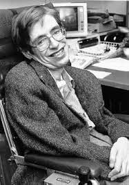
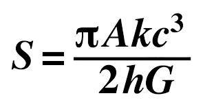
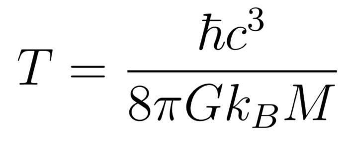

Stephen William Hawking was an English theoretical physicist, cosmologist, and author who was director of research at the Centre for Theoretical Cosmology at the University of Cambridge.

Early Life
Hawking was born in Oxford into a family of physicians. In October 1959, at the age of 17, he began his university education at University College, Oxford, where he received a first-class BA degree in physics.
In October 1962, he began his graduate work at Trinity Hall at the University of Cambridge where, in March 1966, he obtained his PhD degree in applied mathematics and theoretical physics, specialising in general relativity and cosmology.
In 1963, at age 21, Hawking was diagnosed with an early-onset slow-progressing form of motor neurone disease that gradually, over decades, paralysed him.
After the loss of his speech, he communicated through a speech-generating device initially through use of a handheld switch, and eventually by using a single cheek muscle.

Works & Achievements

Hawking's scientific works included:
A collaboration with Roger Penrose on gravitational singularity theorems in the framework of general relativity, and the theoretical prediction that black holes emit radiation, often called Hawking radiation.
Initially, Hawking radiation was controversial. By the late 1970s and following the publication of further research, the discovery was widely accepted as a major breakthrough in theoretical physics.
Hawking was the first to set out a theory of cosmology explained by a union of the general theory of relativity and quantum mechanics. He was a vigorous supporter of the many-worlds interpretation of quantum mechanics